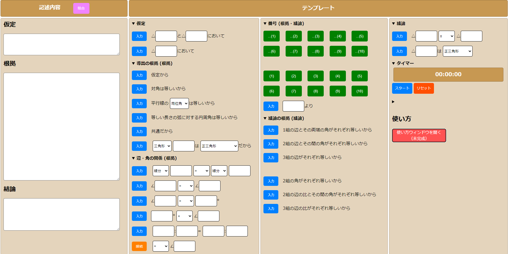
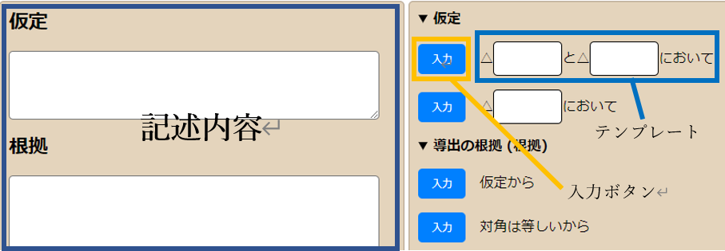
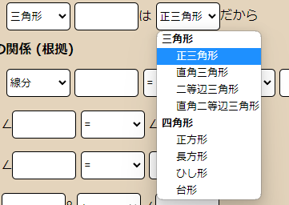
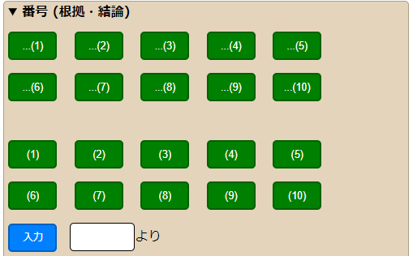
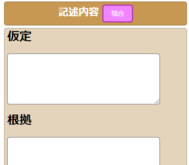
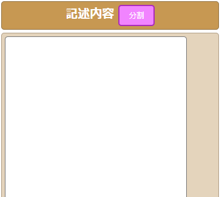
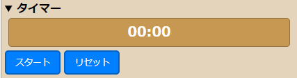

|
使い方 使用場面 基本説明基本的な使い方全体図
拡大図
①テンプレートの空欄に文字を入力して、入力ボタンを押す。 ②「記述内容」の欄に入力したテンプレートの内容が追加される。 このとき、入力した内容が結論部（右上の部分）に自動で入力される。 ③辺や角が等しいことを示せたら、番号付けのテンプレートを使って、根拠に番号を振る。 ④これを繰り返して、記述を完成させる。 図形の性質から根拠を示す場合、メニューの中から要素を選ぶことで、 特徴的な図形の内容を入力することができる。 番号機能の説明上10個のボタンは押すだけで「記述内容」の欄に入力される。分割の場合は根拠の欄に入力される） 下10個のボタンは、押すとその下の空欄に入力される。 そのあと入力ボタンを押すと「記述内容」の欄に入力される。（分割の場合は結論の欄に入力される） 実際の操作画面そのうち追加します 機能説明記述の分割・結合記述内容の横にあるピンク色の「分割」「結合」ボタンを押すと記述内容が分割・結合されます 左：分割状態 右：結合状態
分割状態は基礎的な問題を解くときに使う 結合状態は汎用的に使える タイマー普通のタイマー機能と特に変わらない スタートで開始、ストップで停止、リセットで00:00に戻す 証明問題のコツ未完成 |